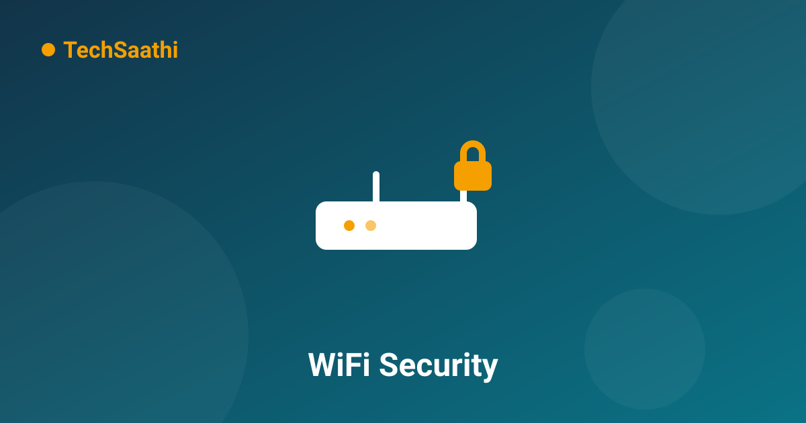

How to Secure Your Home WiFi in 10 Minutes

Think about what flows through your home WiFi: your banking sessions, your work emails, your family's photos, every website everyone visits. Now think about who else can see that if the network is loosely secured — a neighbour freeloading, a stranger in the parking lot, or worse, someone who gets into the router itself. Securing it takes one sitting. Grab a cup of chai — here's the checklist.
First: Open Your Router's Admin Panel
Type 192.168.1.1 or 192.168.0.1 into your browser (the address and default password are also printed on the router's sticker). Everything below happens inside this panel. If the default admin password is still "admin"/"admin" — fix that first, it's the master key to everything else.
1. Change the Admin Password From the Default
Router settings → Administration/System → set a new admin password. This is different from the WiFi password — it controls the router's brain. Default passwords are printed on stickers and listed on public websites, so anyone within range can currently log in and change whatever they like.
2. Use WPA2 or WPA3 — Nothing Older
Wireless settings → Security mode. If your router shows options like WEP or WPA (version one), those are broken — they can be cracked in minutes. Choose WPA2-Personal (AES) at minimum, or WPA3 if your devices support it. This single setting is the difference between a lock and a latch.
3. Replace a Password That Can Be Guessed
"Rahul@2020" or the phone number on your gate sticker is guessable. Make the WiFi password 12+ characters, not a dictionary word, not your name or address. You only type it once per device — the inconvenience of a strong password is a few seconds, once.
4. Turn Off WPS
WPS ("push the button to connect") has a famous flaw: the 8-digit PIN it uses can be brute-forced in hours by free tools. In the router settings it's called WPS — switch it off. Connecting new devices by typing the real password takes ten seconds longer and removes an entire attack method.
5. Set Up a Guest Network for Visitors
Most routers can create a separate guest WiFi — guests get internet, but can't see your devices, printers, or files. Every "can I get the WiFi?" from a visitor, delivery agent, or cousin then touches only the guest lane. Name it something like "Home-Guest" with its own simple password, and change that one freely without disrupting the family.
6. Check Who's Connected Right Now
Router settings → attached devices / DHCP client list. You'll see every phone, laptop, and TV on your network by name. An unknown device? Change the WiFi password immediately (rule 3), which kicks everything off — then reconnect your own devices. Make this check a monthly habit; it takes two minutes.
7. Update the Router's Firmware
Routers get security patches too — Settings → Firmware/System update. An unpatched router is a door with a broken lock no matter how strong the password is. Modern routers update through their phone apps; older ones need a manual check every few months.
8. Turn Off Remote Administration
Some routers allow the admin panel to be reached from the internet, not just from inside your home. Unless you specifically set that up on purpose, disable "Remote management/Access" — it means strangers on the internet can't even knock on your router's door.
9. Reduce Signal Leakage Beyond Your Walls
If your router blasts full signal three houses down, that's reach you don't need. Lower the transmit power if your router allows it, and place the router centrally (this also improves speed — see our WiFi speed guide). Less signal outside = fewer strangers even seeing your network name.
Conclusion
Password strength, WPA2/WPA3, WPS off, admin password changed, firmware current. Those five items are 90% of home WiFi security, and together they take less time than one episode of anything. Do them this evening — your entire household's digital life runs through that little box.
Frequently Asked Questions (FAQ)
Should I hide my network name (SSID)?
It sounds safer but provides almost no real protection — hidden networks are still detectable, and hiding mostly causes device connection headaches. A strong password on a visible network beats a hidden network with a weak one. Spend your effort on the password instead.
How often should I change my WiFi password?
Only when needed: after a guest you distrust had it, after seeing an unknown device connected, or if you've shared it widely. A strong password that stays private doesn't need routine rotation — changing it needlessly just means reconnecting the whole house.
Can my ISP see what I do on my WiFi?
Your ISP can see which sites/domains you connect to (that's how their network routes traffic), but not the encrypted content of HTTPS pages — which today is nearly everything. Inside your home WiFi with HTTPS, family members can't snoop each other's page contents either.
Ten minutes for peace of mind — do it tonight, then share this checklist! 🔒